6.1 Chèn các kí tự đặc biệt
- Mục đích chèn các ký tự không có trên bàn phím như: a, b, D, j...
- Thao tác: Kích chuột vào menu Insert, chọn công cụ Symbol màn hình xuất hiện ta chọn ký tự cần chèn:
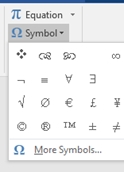
- Muốn chèn các ký tự không có trong mục lựa chọn ta chọn More Symbols… màn hình xuất hiện bảng chứa nhiều ký tự, người dùng có thể sử dụng một số font chữ đặc biệt để tìm kiếm các ký tự như: Wingdings, Symbol, Webdings …
Sau khi chọn được ký tự cần chèn trong bảng, người dùng bấm vào nút Insert hoặc kích chuột 2 lần, ký tự sẽ được chèn vào trong văn bản.
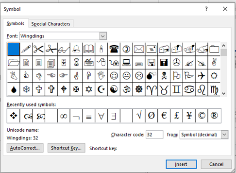
Hình 1.52. Hộp thoại Symbol
6.2 Soạn thảo công thức toán học
- Thao tác: Kích chuột vào menu Insert chọn công cụ Equation màn hình xuất hiện, người dùng chọn kiểu công thức toán học cần chèn:
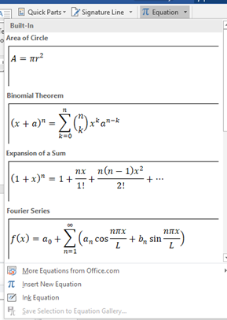
Hình 4.53. Chèn công thức toán học
Ngoài ra, người dùng có thể tự soạn thảo một công thức tùy ý bằng cách chọn vào mục:
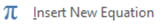
Type equation here.Công thức được soạn thảo trong khung giới hạn của equation và lựa chọn các mẫu trình bày trên thanh công cụ Equation
Tools
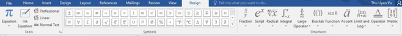
Hình 4.54. Thanh công cụ soạn thảo công thức toán học
6.3 AutoShape
Khi làm việc trong Word, người dùng có thể chèn nhiều hình dạng như các mũi tên, chú thích, hình vuông, hình sao, ...Việc thêm hình dạng (shapes) vào trong Word giúp người dùng sẽ có được những tài liệu đẹp mắt và thú vị hơn.
Đặt vị trí con trỏ chuột muốn chèn, chọn tab Insert, sau đó nhấp chọn mục Shape. Menu chi tiết chứa nhiều hình dạng sẽ xuất hiện.
- Nhấp chọn hình dạng mà người dùng muốn.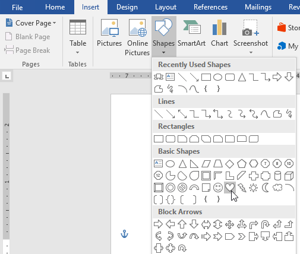
Hình 4.55. Menu lựa chọn Shape
- Nhấp và kéo hình dạng vào vị trí
mong muốn để thêm hình dạng
vào tài liệu.
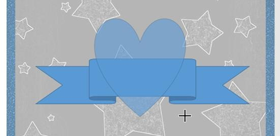
Người dùng cũng có thể thêm văn bản vào hình dạng. Khi văn bản xuất hiện trong tài liệu, người dùng có thể gõ chữ, sau đó sử dụng các tùy chọn định dạng trong tab Home để thay đổi phông chữ, kích thước và màu của văn bản.
- Thay đổi thứ tự của các hình dạng
Nếu một hình dạng chèn lên một hình khác, người dùng có thể thay đổi thứ tự để hình dạng mình muốn xuất hiện phía trước.
- Nhấp chuột phải vào hình người dùng muốn di chuyển. Trong ví dụ này, chúng ta sẽ để hình trái tim xuất hiện phía sau ribbon, do đó, nhấp chuột phải vào hình trái tim.
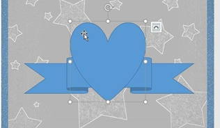
- Trong trình đơn hiện ra, nhấp chọn Bring to Front hoặc Send to Back. Nhấp vào tùy chọn thứ tự mong muốn. Ở đây chúng
ta sẽ chọn Send to Back. Thứ tự của các hình dạng đã thay đổi như mong muốn.
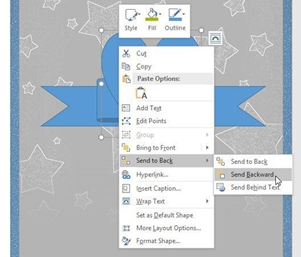
- Thay đổi kích thước hình dạng
Chú ý: Những điểm màu vàng trên hình dạng cho phép người dùng thay đổi vị trí của các nếp gấp.
- Chỉnh sửa hình dạng
Word cho phép người dùng chỉnh sửa các hình dạng theo nhiều cách khác nhau. Người dùng có thể thay đổi hình dạng này thành một hình dạng khác, định dạng kiểu dáng và màu sắc của hình dạng cũng như thêm các hiệu ứng khác nhau.
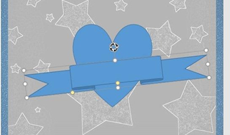
- Thay đổi kiểu dáng của hình dạng
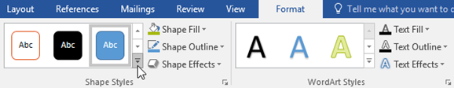
- Trong menu thả xuống, chọn style hình dạng mà người dùng muốn sử dụng.
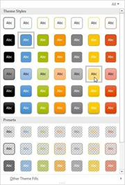
- Thay đổi màu nền của hình dạng
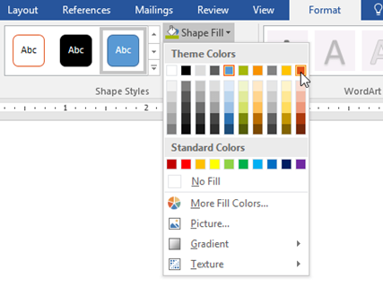
Nếu người dùng muốn sử dụng kiểu đổ màu khác, hãy chọn Gradient hoặc Texture từ trình đơn thả xuống. Người dùng cũng có thể chọn No Fill để làm cho hình dạng trong suốt.
- Thay đổi outline (màu viền) của hình dạng
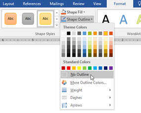
Bên cạnh đó, trong menu thả xuống, người dùng có thể thay đổi độ dày (Weight) của đường viền nữa.
- Thêm hiệu ứng cho hình dạng
- Thay một hình dạng khác
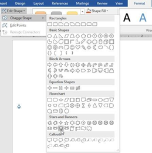
6.4 Text book
Text Box là các ô cho phép người dùng nhập dữ liệu vào và có thể được đặt bất cứ đâu trong tài liệu.
Thực hiện: Đặt trỏ chuột tại vị trí cần chèn, chọn Tab Insert à Group Text à Text Box.
Người dùng có thể chọn Text Box mẫu mà Word 2019 cung cấp hay tự thiết kế Text Box riêng cho mình bằng cách chọn Draw Text Box
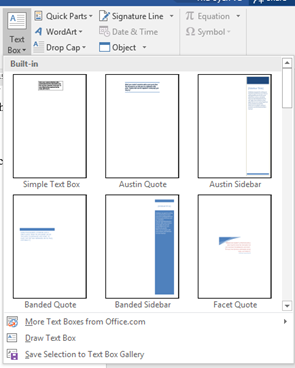
Hình 4.56. Chèn Text Box
Điều chỉnh và đưa Text vào với thanh công cụ Format của Text Box. Các thao tác định dạng văn bản trong Text Box giống như các thao tác định dạng văn bản đã trình bày ở phần trên.
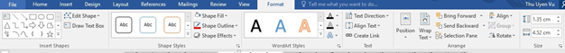
Thêm hình ảnh vào là cách trình bày giúp tài liệu của người dùng thu hút hơn, dễ dàng làm nổi bật những thông tin quan trọng và thêm nhấn mạnh cho đoạn văn bản hiện tại
- Đặt con trỏ chuột tại vị trí người dùng muốn hình ảnh xuất hiện
- Chọn Insert trên tab Ribbon và chọn Pictures
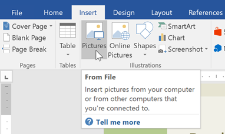
Hình 4.57. Chèn hình ảnh
- Duyệt đến vị trí file ảnh muốn chèn, chọn ảnh và click Insert
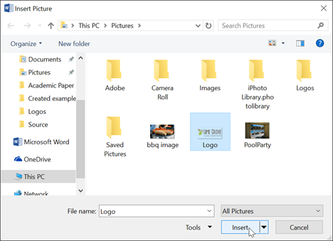
Sau chèn một hình ảnh vào Word, người dùng sẽ nhận thấy rằng rất khó để có thể di chuyển nó đến đúng vị trí mình muốn, hoặc muốn chỉnh kích thước, màu sắc của ảnh. Điều này đều có thể thực hiện trên thanh công cụ Picture Tools khi người dùng chọn vào hình ảnh muốn chỉnh sửa.
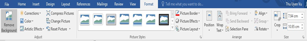
- Group Adjust: Điều chỉnh độ sáng tối, màu, thay đổi hình ảnh
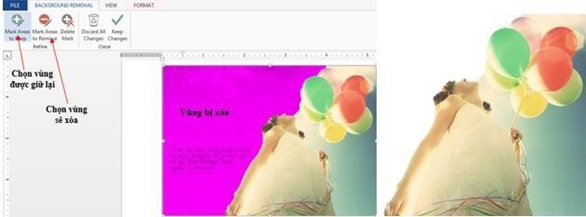
- Corrections: Chỉnh độ sáng tối cho hình ảnh.
- Color: Chỉnh màu cho hình ảnh để phù hợp với nền trang tài liệu.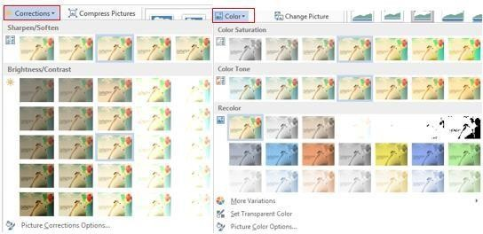
- Artistic Effect: Một số hiệu ứng nghệ thuật à hình ảnh sống động và đẹp hơn.
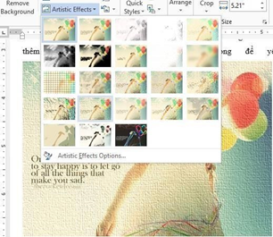
- Reset Picture: bỏ hết tất cả những hiệu ứng vừa thiết lập à đưa hình ảnh trở về dạng ban đầu khi chèn.
- Picture Style: điều chỉnh và tạo hiệu ứng cho hình ảnh.
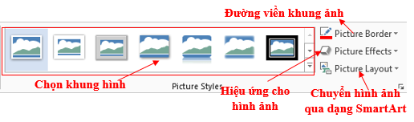
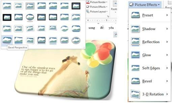
- Picture Layout: Ngoài ra người dùng còn có thể chuyển hình ảnh vào các lược đồ SmartArt.
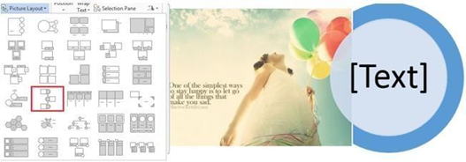
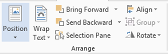
- Wrap Text: chọn cách đặt ảnh và có thể di chuyển hình ảnh đến vị trí người dùng mong muốn.
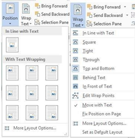
• In Line with Text: Hình và chữ cùng nằm trên một hàng.
• Square: Chữ bao quanh hình theo hình vuông.
• Tight: Chữ bao quanh hình theo đường viền của hình.
• Through: Chữ bao quanh xuyên suốt hình.
• Top and Bottom: Chữ canh theo lề trên và lề dưới của hình.
• Behind Text: Hình nằm dưới chữ tạo hình nền.
• In Front of Text: Hình nằm trên bề mặt chữ.
• Edit Wrap Points: Thiết lập giới hạn chữ đè lên hình.
• More Layout Options: Mở màn hình Layout.
- Các chức năng khác:
• Position: Thiết lập vị trí của đối tượng trên trang.
• Rotate: Thiết lập góc xoay cho các đối tượng.
• Align: Canh lề cho đối tượng hai các đối tượng với nhau.
• Group (Ungroup): Gộp nhóm (bỏ gộp nhóm) cho các đối tượng.
• Bring Forward: Thiết lập vị trí nằm trên hay nằm dưới giữa các đối tượng.
• Send Backward: Thiết lập đối tượng nằm dưới đối tượng khác.
• Selection Pane: Hiển thị các đối tượng dạng danh sách giúp dễ dàng chọn lựa và thực thi các hiệu chỉnh trên đối tượng.
Lưu ý: Canh lề cho các đối tượng với nhau hay gộp nhóm chỉ thực hiện được khi ta chọn nhiều đối tượng cùng lúc bằng cách đè và giữ phím Shift kết hợp Click chuột chọn các đối tượng.
- Group Size:
Cho phép thiết lập chiều rộng hay chiều cao của đối tượng.
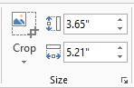
Lưu ý: Mở rộng Size, Wrap Text, Position cũng cho các chức năng tương tự như
- Chức năng cắt xén hình ảnh:
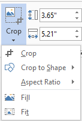
+ Crop: Cắt bỏ những phần không cần thiết của hình ảnh.
+ Crop to Shape: Cắt theo hình được gợi ý từ Auto Shape.
+ Aspect Ratio: Cắt theo tỷ lệ.
+ Fill: Cắt bỏ những vùng không được chọn.
+ Fit: Cắt bỏ những vùng được chọn.6.6 Tạo chữ nghệ thuật
Công cụ tạo chữ nghệ thuật trong văn bản, WordArt được xử lý như một hình ảnh chèn vào văn bản. Chọn Tab Insert -> Group Text -> WordArt.
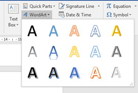
Hình 4.58. Chèn chữ nghệ thuật
Chọn kiểu WordArt và nhập nội dung
Chú ý: Chọn font thích hợp để hiển thị được Tiếng Việt.
- Hiệu chỉnh WordArt
Chọn đối tượng -> Tab Format trên thanh công cụ Drawing Tools
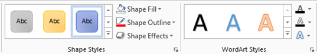
- Group Shape Styles: Chọn đối tượng WordArt thực hiện mở rộng Shape
Styles, chọn hiệu ứng tương ứng
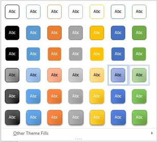
- Các chức năng khác:
+ Shape Fill: Tạo màu nền cho WordArt.
+ Shape Outline: Tạo màu viền cho WordArt.
+ Shape Effects: Tạo hiệu ứng cho WordArt như là bóng, phản chiếu, 3D…
- Group WordArt Style:
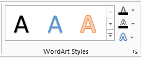
+ Text Fill : Màu nền chữ WordArt.
+ Text Outline : Màu đường viền chữ WordArt.
+ Text Effect 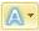
+ More : Mở rộng WordArt Styles.
- Hiệu ứng cho WordArt:
Ngoài các hiệu ứng như bóng, phản chiếu, 3D… người dùng có thể thay đổi hình dạng của WordArt bằng chức năng Transform.
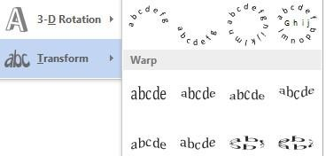